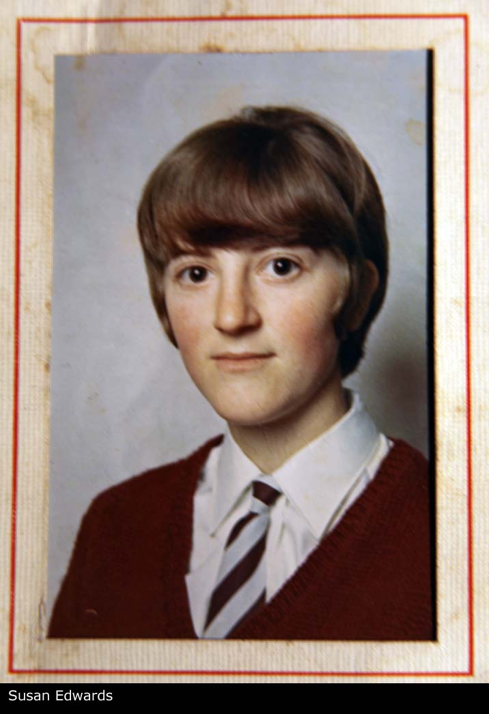
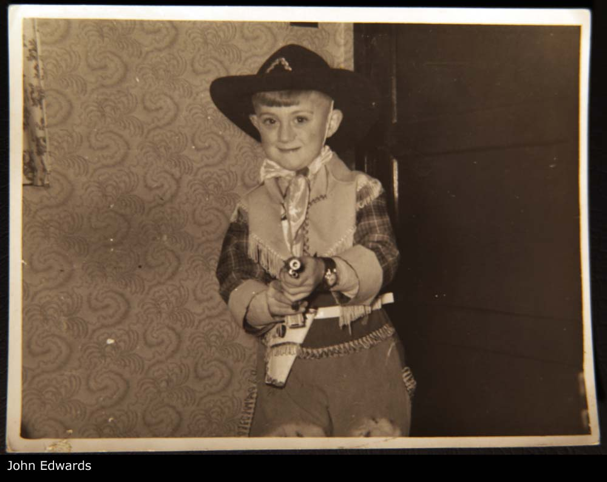

Gladys LEWIS b. About 1925
Gladys LEWIS b. About 1925 - Overview
| Name | Full Name | Gladys LEWIS |
| Forename | Gladys | |
| Surname | LEWIS | |
| Sex | Female | |
| Birth | About 1925, Oswestry, Shropshire, England | |
| Parents | Willam Owen WATKIN x Mary Helen LEWIS [Family] | |
| Spouse | Bertram Tibbot (Bert The Brass) EDWARDS d. About 2007 [Family] | |
| Children | 1. Susan EDWARDS 2. John EDWARDS d. About 1995 | |
| Change Date | Date | 14/04/2011 |
| Time | 15:59 | |
Gladys LEWIS, eldest child of Willam Owen WATKIN and Mary Helen LEWIS [Family], was born about 1925 in Oswestry, Shropshire, England. Gladys was born of an earlier partner of Mary Helen and raised as an aunt with the Lewis name. Although she did come to live with her siblings a little later on after mother Mary Helen married William Owen. Gladys married in Gobowen and stayed in the village to this day. One son and one daughter listed. |  |
Children
| i |  | |||
| ii | John EDWARDS. He died about 1995 in Shropshire, England. |  |
Web page generated using a registered copy of GedScape software, licensed by Mark Watkin
Web page generated using a registered copy of GedScape software (www.gedscape.co.uk), licensed to Mark Watkin